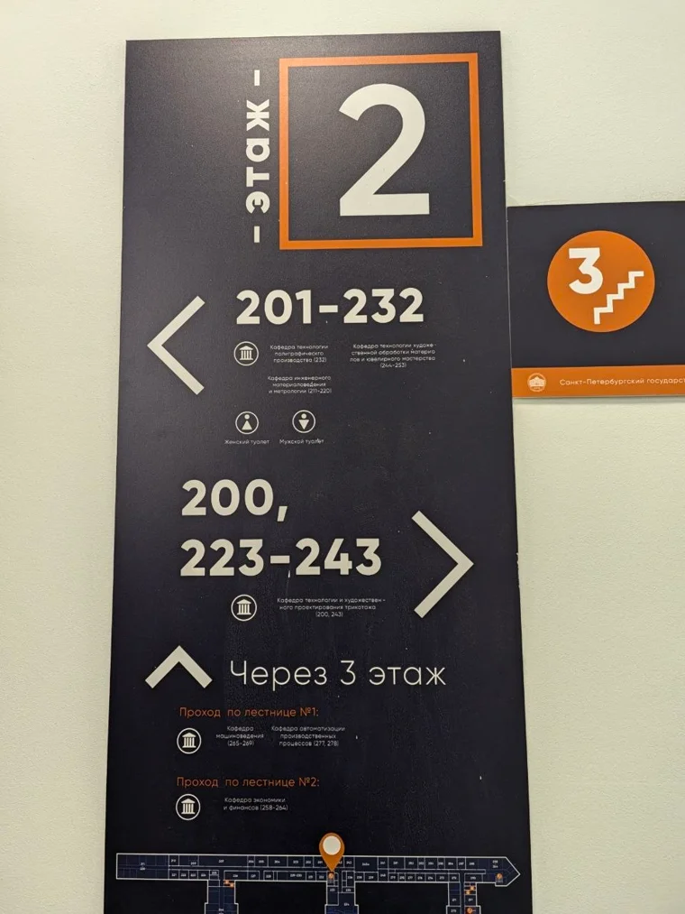
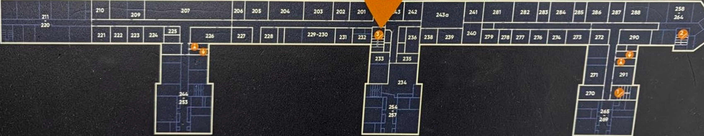
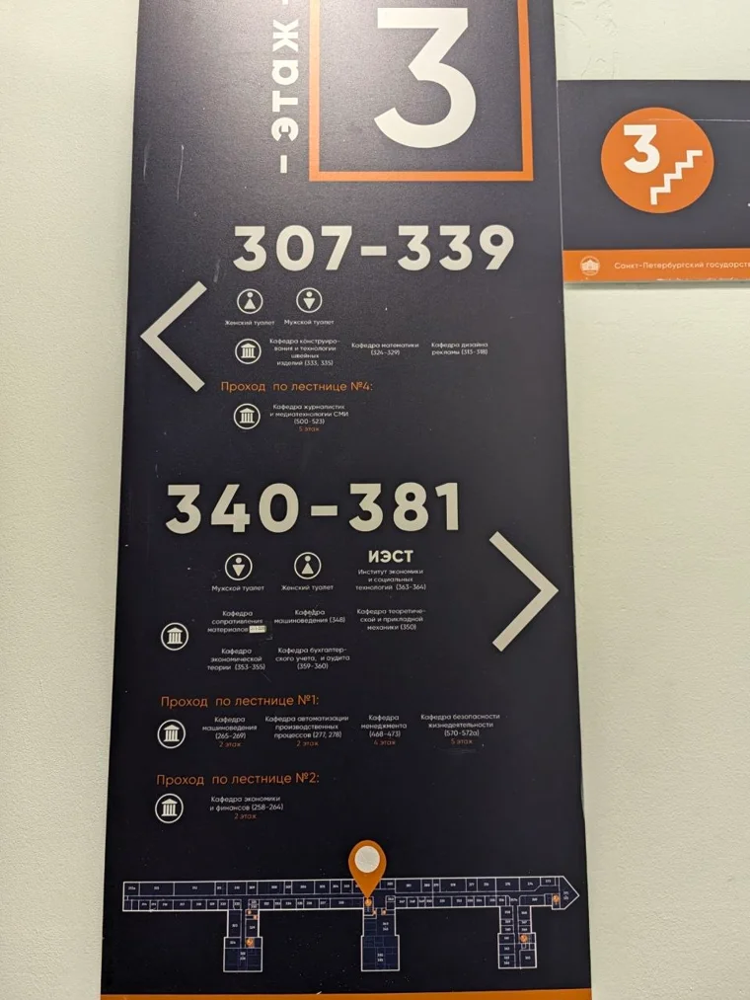
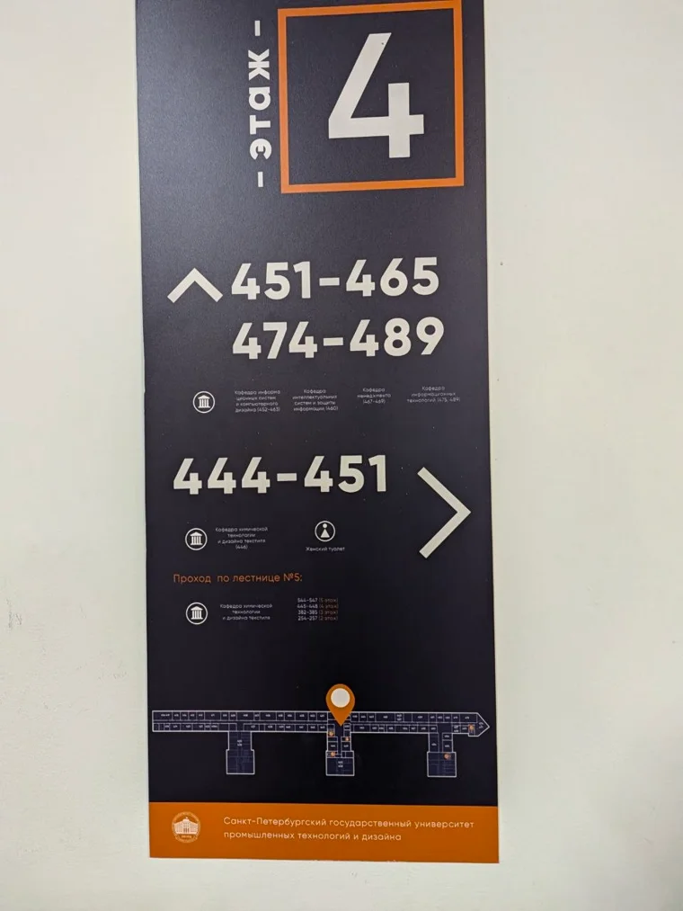

2-й этаж
Через 3-й этаж: к 265–269, 277 и 278 по лестнице №1, к 258–264 по лестнице №2.
СПбГУПТД, Вознесенский проспект, 44–46
Сверьте номер кабинета и лестницу с панелью этажа.
Со стороны Вознесенского проспекта вход с зелёным козырьком расположен под остеклённым пролётом ближе к скошенному углу. Метка на 3D-модели открывает первый этаж. Фото фасада ↗
Маршрут от входа начинается у главной лестницы. В модели её площадка на втором этаже сопоставлена с лестницей №3 на навигационной панели. Для части кабинетов второго этажа панель указывает обход через третий.


Через 3-й этаж: к 265–269, 277 и 278 по лестнице №1, к 258–264 по лестнице №2.

Указатель подтверждает спуск к удалённым секциям 2-го этажа. На нём также обозначен подъём по лестнице №4 к 500–523.

Лестница №5 указана для групп 254–257, 382–385, 445–448 и 544–547. Номера на разных этажах помогают сверить направление в корпусе.
Панели показывают номера и взаимное расположение зон. Двери, размеры проходов и стыки архивных этажей с современными схемами требуют проверки в корпусе.
Паспорт упоминает пассажирский лифт. В документе нет его положения на этажах, актуального состояния и непрерывного пути от входа.
Паспорт литера А, стр. 2 ↗В паспорте это отдельное одноэтажное здание. Сведения о его входе нельзя переносить на пятиэтажную часть.
Паспорт литера Б ↗Уточнить условия можно в ресурсном центре университета. В разделе доступной среды отдельно оговорено ограничение для посетителей библиотеки на креслах-колясках.